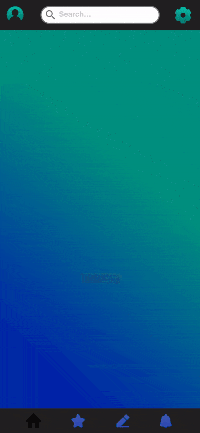

Quora Mobile App Rebranding
A project to rebrand Quora to appeal to a younger audience by improving UX and aesthetics.
Type
Interaction Design Individual Class Project
Date
Spring 2020
Role
User Research, Wireframing, Interaction, Branding, Visual design, Prototyping
Challenge
- Make a massive amount of text readable on the page
- The low popularity of this site
- Outdated design
- Confusing and complex task flow
Research Analysis
User Profile
Joseph is a college student studying computer science who is a fan of reading and uses Quora to read contents relevant to his life and also irrelevant content to satisfy his curiosity and to kill time.
Needs
- Fragmented reading
- Get Thoughts
- Connect to other minds
Quora SWOT Analysis
Wireframes
- Gathering inspiration from similar existing product and good UI examples
- Paper wireframes create a direct preview of the possible approximate structure
- Help brainstorm and produce a better structure

Task Flow
- Significantly reduced the inconvenience and confusion in the original task flow caused by the big X on the bottom of the original screen
- The new task flow help user switch between the question, answers, and comments easily, therefore, encourage users to read and write comments and read multiple answers under the same question
Rebrand
- Chose fresh fonts to give a different feeling to attract younger audiences
- Experimented with the gradient UI trend
- Brainstormed a new logo and name to give a fresh feeling and differentiate from the old brand
Interaction Guide
- Use micro-interaction to create more natural gestures and provoke an emotional response from users
- All micro-interactions were created to endure long-term use and will only add to user experiences instead of taking up unnecessary space
1. Open homepage
- Create a visual hierarchy by providing different things first
- Contribute to the playful theme
2. Minimize Question Bar
- Reduce the space taken by the question bar and encourage user interaction
- To stress the hierarchical relationships between elements. The answer blocks are the most important sections in the page and the question block is negligible
- Direct user attention
3. Swipe for Next Answer
- Provide shortcut; reduce steps taken to finish an action
- Enhance the sense of direct manipulation
- Simplify the task flow
Solution
App Logo
- Designed to be readable at a small size
- Directly correlated to the aesthetic of the app
- Reveals the purpose of the app by the pencil in the logo
3 Micro-interactions

Open Home Page Micro-interaction
Minimize Question Bar Micro-interaciton
Swipe for Next Answer Micro-interaction
Results and Takeaways
- Gained knowledge of the popular trend in UI currently through research
- Received validation from my professor
- Gained experience creating micro-interaction to provide a better UX